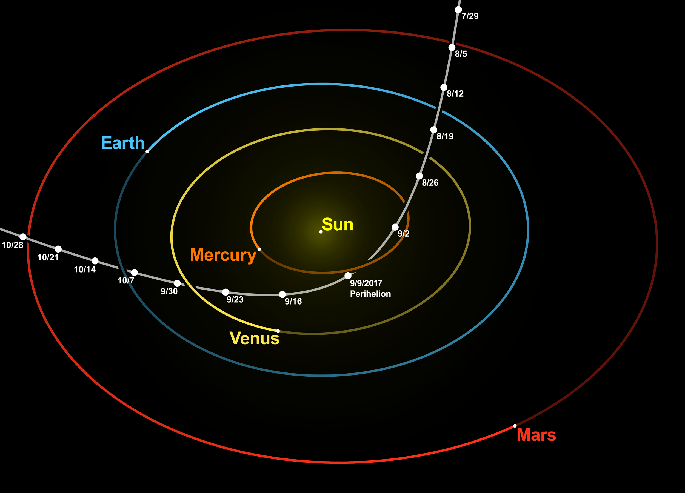

Conic Sections
Conic sections are of particular importance to orbital mechanics since all orbits of a point mass about a much heavier body are conic sections with the heavier body at one of the foci. This is a more general statement of Kelper's 1st Law which states that the orbit of a planet is an ellipse with the sun at one of the foci.
There are 3 (or 4) types of conic sections: circles, ellipses, parabolas and hyperbolas. (A circle can be considered a special ellipse) Although this is covered in year 4 math, we will go into conic section with much more detail here.


Circles were covered in primary school so we will skip that.
Ellipse
An ellipse is a plane curve surrounding two focal points (aka focus, plural: foci), such that for all points on the curve, the sum of the two distances to the focal points is a constant. As such, it generalizes a circle, which is the special type of ellipse in which the two focal points are the same. Watch the 3Blue1Brown video below more information about ellipses.


Eccentricity
We usually represent the semi-major axis as \(a\), semi-minor as \(b\) and linear eccentricity (length from center to foci) as \(c\)


As you hopefully know, for every point on the ellipse, the sum of distances to foci is constant. We can show that this is in fact just simply \(2a\).
Consider the point along the \(x\)-axis labelled "vertex" (Top diagram). Let's call that point \(P_1\) The length of \(F_1\) to \(P_1\) is \(a-c\), and the length of \(F_2\) to \(P_1\) is \(a+c\). Combining these 2 gives \(a+c+a-c=2a\), and this applies to every point on the ellipse.
Ellipses have an eccentricity \(0\leq\varepsilon<1\), that is defined as \(\varepsilon = \frac{c}{a}\), or \(c=a\varepsilon\). You can think of it as the position of the focus as a fraction of the semimajor axis.
Warning
eccentricity is sometimes denotes as \(\epsilon\) or \(e\)
Now consider the sum of distances to the foci at the point labelled "co-vertex". The distance from \(F_1\) (or \(F_2\)) to the co-vertex is \(\sqrt{c^2+b^2}\). Therefore the sum of distances to the foci is \(2\sqrt{c^2+b^2}\). Earlier we have proven that this value has to be \(2a\), so we get the following:
Plugging in \(c=a\varepsilon\), we can simplify to get an expression for \(\varepsilon\) in terms of \(a\) and \(b\)
Circles
Circles are just a special case when \(\varepsilon = 0\)
Area
The area \(A\) of an ellipse can be given by:
Warning
There is no nice formula for the perimeter of the ellipse. The reason why will give you a world of nightmares never seen before.
Aphelion and Perihelion


Aphelion: point in the orbit that is furthest away from the sun \(r_{ap} = a(1+\varepsilon)\) Perihelion: point in the orbit that is closest to the sun \(r_{pe} = a(1-\varepsilon)\)
Apoapsis and Periapsis
Aphelion and Perihelion only applies for a mass orbiting the sun, and the sun only.
If an object is orbiting around earth use Apogee and Perigee, if it is around jupiter use Apojove and Perijove, ...
The more general term is apoapsis and periapsis, or apocenter and pericenter.
Summary
| to find | if you know | use |
|---|---|---|
| \(r_{ap}\) | \(a\), \(\varepsilon\) | \(r_{ap} = a(1+\varepsilon)\) |
| \(r_{pe}\) | \(a\), \(\varepsilon\) | \(r_{pe} = a(1-\varepsilon)\) |
| \(a\) | \(r_{ap}\), \(r_{pe}\) | \(2a = r_{ap}+r_{pe}\) |
| \(a\) | \(\varepsilon\), \(b\) | \(a = \frac{b}{\sqrt{1-\varepsilon^2}}\) |
| \(b\) | \(\varepsilon\), \(a\) | \(b = a\sqrt{1-\varepsilon^2}\) |
| \(c\) | \(a\), \(\varepsilon\) | \(f = a\varepsilon\) |
| \(c\) | \(a\), \(b\) | \(c = \sqrt{a^2-b^2}\) |
| \(c\) | \(r_{ap}\), \(r_{pe}\) | \(2c = r_{ap}-r_{pe}\) |
| \(\varepsilon\) | \(a\), \(b\) | \(\varepsilon = \sqrt{1-\frac{b^2}{a^2}}\) |
| \(\varepsilon\) | \(a\), \(c\) | \(\varepsilon = \frac{c}{a}\) |
| \(\varepsilon\) | \(r_{ap}\), \(r_{pe}\) | \(\varepsilon = \frac{r_{ap}-r_{pe}}{r_{ap}+r_{pe}}\) |
Extension: semi-latus rectum
Although this is denoted as \(p\) in the diagram, it is usually denoted as \(\ell\). To get it's formula, first image a right triangle, with sides \(p\), the line from \(F_1\) to \(F_2\) and the line from \(F_1\) to the tip of \(p\) where it intersects the ellipse.
Extension (For now): Polar form of an ellipse
The Polar Form of an ellipse relative to a focus is:
Where \(r\) (or more formally \(r(\theta)\)) is the distance between the orbit and the focus at an angle \(\theta\).


Parabola, Hyperbola
These also describe paths of objects in space that will never come back, for example Oumuamua follows a hyperbolic orbit:

Note
Every single "orbit" a mass can take is a conic section (approximately). The reason why this happens will (hopefully) be covered in a later section. This is approximate as this assume the second mass does not move, and that the orbiting mass is a point mass.